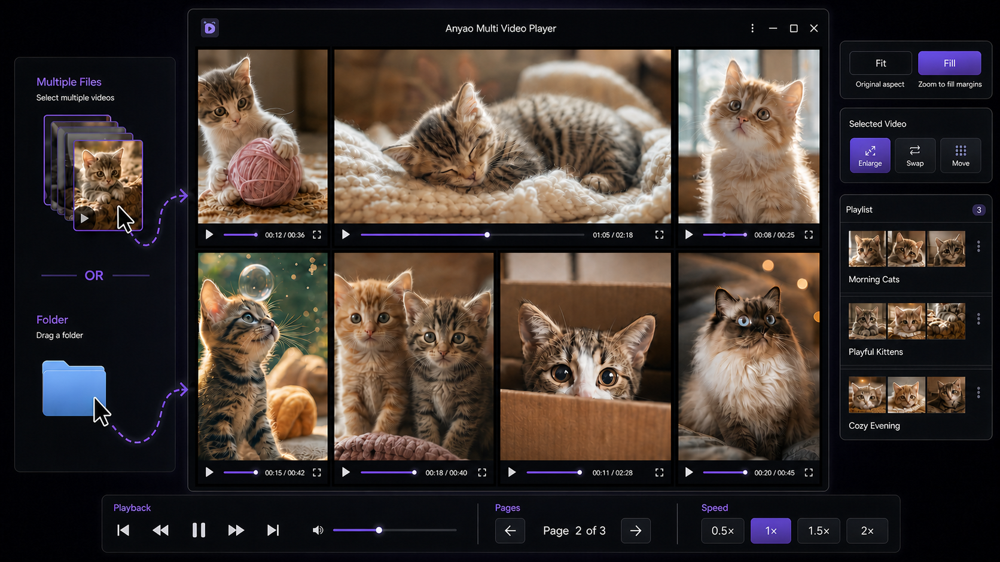

Smart layouts
Responsive paging and balanced grids adapt whenever the window changes.
MULTI-VIDEO DESKTOP PLAYER
Automatically arrange portrait, landscape, and mixed video sets in one responsive grid. Built for macOS and Windows.
Local-first. Your videos stay on your computer.
SEE IT IN ACTION
Drop in multiple files or a folder, compare every video in a flexible grid, and keep your favorite arrangements ready in playlists.

FEATURES
Responsive paging and balanced grids adapt whenever the window changes.
Load supported videos in one action, replace the current set, or add more.
Each tile has its own controls, while shortcuts handle playback, mute, view, and fullscreen.
Recall video sets with thumbnails, ordering, layout, fit/fill, zoom, and position.
Keep the complete frame or use every pixel. Zoom and pan individual videos when needed.
Pro removes app limits so the practical ceiling is determined by your hardware.
VIDEO COMPATIBILITY
The container is only part of the story. The video and audio codecs inside each file determine actual playback compatibility.
| Container | Recommended codecs | Compatibility |
|---|---|---|
| MP4 / M4V | H.264 video + AAC audio | Recommended |
| WebM | VP8 / VP9 + Opus / Vorbis | Recommended |
| MOV | H.264 video + AAC audio | Common |
| OGV | Theora video + Vorbis audio | Varies |
| AVI / MKV | Depends on the codecs inside | Not guaranteed |
Recognized containers: MP4, MOV, M4V, WebM, OGV, AVI, and MKV. WMV is a legacy format and is not supported; convert it to H.264/AAC MP4 before loading. HEVC/H.265, uncommon codec profiles, and damaged files may not play even when the file extension is recognized.
FREE & PRO
| Feature | Free | Pro |
|---|---|---|
| Videos loaded at once | Up to 8 | Unlimited* |
| Layout | 2 × 4 | Custom rows and columns |
| Playlists | Up to 10 | Unlimited* |
*Subject to your computer's performance. Pro is a one-time purchase with a lifetime license for up to 5 active devices. Deactivate a device before moving the license to another device. Manual activation resets are not guaranteed.
Buy Pro on Lemon SqueezyAll sales are final. Please test the Free version before purchasing. By purchasing, you agree to the Terms of Use and Privacy Policy.
DOWNLOAD
Three native downloads. No account required for Free.
Optimized for modern Macs with an Apple chip.
For earlier Macs powered by an Intel processor.
A familiar installer for 64-bit Windows PCs.
FIRST LAUNCH
The macOS build uses an ad-hoc signature and is not notarized by Apple. Because macOS cannot verify the developer, Gatekeeper may block the first launch even when the download is intact.
Only override this warning for a copy downloaded from the official GitHub Releases page. The Open Anyway button is available for about one hour after a blocked launch attempt.
If macOS still reports that the app is damaged, open Terminal and remove the quarantine attribute from the copy in Applications:
xattr -dr com.apple.quarantine "/Applications/Anyao Multi Video Player.app"The Windows installer is not code-signed. Microsoft Defender SmartScreen may show “Windows protected your PC” on first launch.
Only bypass SmartScreen for a file downloaded from the official release linked on this page.
Read Microsoft's SmartScreen guidance ↗FAQ
Choose arm64 for Apple silicon (M1 or newer) and x64 for an Intel Mac. Check Apple menu → About This Mac if you are unsure.
The builds are not registered or notarized with Apple and Microsoft. Follow the first-launch instructions above only when you downloaded the file from this official page.
See the Video Compatibility table above. MP4 or M4V with H.264/AAC and WebM with VP8/VP9 are recommended; playback of every codec is not guaranteed. WMV is not supported and should be converted to H.264/AAC MP4.
Pro removes the app's numeric limit. The practical number of simultaneous videos depends on your computer, available memory, GPU, video resolution, bitrate, and codec.
Open Lemon Squeezy My Orders and sign in with the email address used at checkout. Lemon Squeezy sends a secure sign-in link by email.
Open the license screen on the old device and select Deactivate License before activating the new device. Up to five devices can be active at once. Manual activation resets are not guaranteed.
Continued compatibility with future macOS or Windows versions is not guaranteed. Updates and fixes may be provided on a reasonable-efforts basis, without a guaranteed schedule.